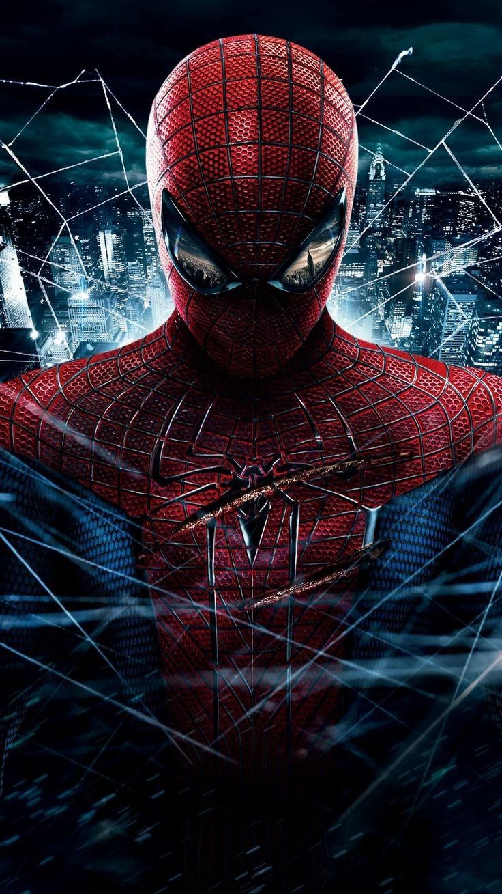
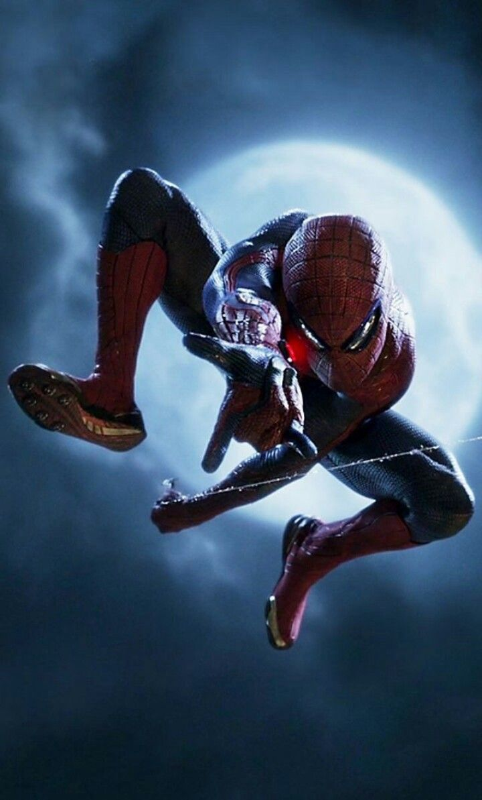
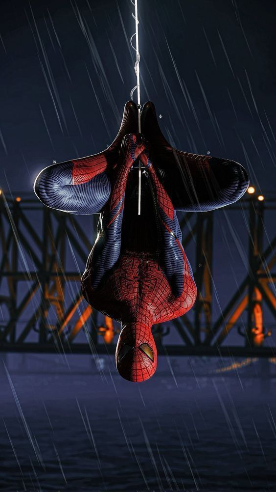

Introdução
O Homem-Aranha é um dos super-heróis mais icônicos da Marvel. Criado por Stan Lee e Steve Ditko em 1962, Peter Parker ganhou os corações de milhões com sua história de responsabilidade e coragem.
Filmes
Desde os clássicos com Tobey Maguire até as produções mais recentes com Tom Holland, o Homem-Aranha já teve diversas versões nos cinemas, cada uma trazendo uma nova abordagem ao personagem.
Jogos
O herói também brilhou nos games! Os títulos mais recentes para PlayStation como "Marvel’s Spider-Man" e "Miles Morales" foram muito elogiados pela jogabilidade e enredo imersivo.
Curiosidades
- O uniforme clássico do Homem-Aranha foi inspirado em acrobatas e lutadores de wrestling.
- O personagem quase foi rejeitado pela Marvel nos anos 60!
- Ele já fez parte dos Vingadores, Quarteto Fantástico e até dos X-Men em algumas histórias.